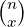

Chapter 3 Common Distributions
 3.1 Bernoulli Trial
 3.2 Binomial Distribution
 3.3 Poisson Distribution
 3.4 Normal Distribution
 3.5 Other Distributions
 3.6 Summary
In the previous Chapter, we have talked a lot about properties of random variables. They may sound boring and dull if we do not have solid examples of what random variables can be. In this Chapter, we will be discussing some of the more common types of random variables and distributions.
3.1 Bernoulli Trial
A Bernoulli trial, named after Jacob Bernoulli1 , is a random experiment with exactly two possible outcomes and constant probability.
An example of a Bernoulli trial is a coin tossing, with only two possible outcomes head and tail. Since there are finite many (2, to be more precise) possible outcomes, the distribution is discrete.
Normally, we will denote the ‘success’ outcome as 1 and ‘failure’ as 0. Also, we usually denote the chance of ‘success’ as p, the other being 1 − p for obvious reason. This variable p is the parameter of the distribution. A parameter2 is a characteristic that can help defining a distribution or a function.
Knowing the nature of the distribution, we would want to find out the PMF of it. A random variable that follows Bernoulli trials is called Bernoulli random variable. Thus, for a Bernoulli random variable X, we have
where x = 0,1 and 0 ≤ p ≤ 1.
When x = 1, P(X = 1) = p(1 − p)0 = p. When x = 0, P(X = 0) = p0(1 − p)1 = 1 − p.
Having the PMF will help us obtain the expectation and variance. For the same random variable X, we have
and
The last property we will be discussing for a Bernoulli trial is its MGF. Since we know
|
|
and
we get
|
|
3.2 Binomial Distribution
Bernoulli trials deals with single-time experiment with two possible outcomes. This is quite limited, and we would like to go further from this model. The most immediate thing we can change is by changing the number of times of the experiment from 1 to n. This gives us binomial distribution, discovered by Jacob Bernoulli in his work entitled Ars Conjectandi.
Bernoulli trials have a single parameter, the probability of success p, and binomial distribution has one more parameter, the number of trials n. Everything else, like 0 and 1 for success and failure, p for success rate and 1 − p for failure rate, are defined identically for a typical binomial distribution. We will sometimes denote such a distribution as Binom(n,p). This type of distribution, like a Bernoulli trial, is discrete.
The PMF of a binomial distribution can be found by referring to binomial theorem. Binomial theorem states that
where the value of n can be any real number.
We can substitute x and y with p and 1 − p, which change the statement into
This way, we get the PMF of a binomial distribution with random variable as X, n trials and success rate as p as
Having the PMF will help us to obtain the expectation and variance. For the same random variable X, we have
and
where each Xi is an identical and independent Bernoulli random variable.
The fact that a binomial distribution is a compilation of several Bernoulli trials help us to get its MGF. Since
we get
|
|
3.3 Poisson Distribution
Binomial distribution involves n Bernoulli trials each with success rate p. These are useful in many cases, but it can definitely be extended. The probability of an event occurring does not always have to be constant throughout. For example, the probability of crime occurring in a neighbourhood may be constant at first, but it will not have the same probability as the total number of crime increases. Many factors and reasons may cause this phenomenon to occur but we will not try to figure out why in this notebook. What we do see here is that there are definitely examples of things that have less and less chances of happening when the number of times increase. These examples will be modelled by the Poisson distribution, named after the French Mathematician Siméon Poisson3 .
Given Binom(n,p) with random variable X, we have PMF
where 0 ≤ k ≤ n.
Since we know the probability will decrease as number of trials increase, we might as well set the probability of success as α∕n where α is a constant. Making that change to the statement of PMF, we get
This is not that nice of an equation. We need to find ways to make it more elegant. Let us first set n to a very big number and approaches infinity. Looking at the case when k = 0, we get
Note that the Taylor series ln(1 − x) = ‚àí‚àë n=1∞xn∕n, we will get
When n →∞, the terms on the right, starting from the second one, will be equal to 0. By making both sides of the equation the power to e, we have
This gives us the one value of the full PMF. This is certainly not enough, so we try to find the other ones. We happen to realise that two consecutive probabilities Binomk have a ratio, which can be found by the following statement:
That is all we need to find the PMF of a Poisson distribution. We have
where πk(α) represents the probability of the event to happen for k number of times with the average number of event occurrence as α for a Poisson Distribution.
Having the PMF will help us to obtain the expectation and variance. For the same random variable X, we have
|
|
and
![Var(X ) = E[X2]− (E [X ])2
∑
= k2-1λke− k − λ2
k≥0 k!
∑
= λe−λ k---1---λk− 1 − λ2
k≥1 (k − 1)!
∑ 1 ∑ 1
= λe−λ( (k − 1)-------λk−1 + ------- λk−1)− λ2
k≥1 (k − 1)! k≥1(k − 1)!
−λ ∑ 1 k− 1 λ 2
= λe (λ (k − 2)-------λ + e )− λ
k≥2 (k − 2)!
= λe−λ(λeλ + eλ)− λ2
2 2
= λ + λ − λ
= λ.](chp321x.png) |
Knowing the PMF can help us find the MGF. Since
we get
|
|
We will sometimes use λ to replace α in the above equation.
3.4 Normal Distribution
Earlier on, we have learned about the statement of the PMF of a binomial distribution. The PMF contains a combinatoric operation (n k) . This is hard to compute when n gets bigger, especially at times when modern computing tools were not available. This leads Mathematicians to find ways to approximate the statement. The Mathematician who made progress on that is de Moivre.
At the time of de Moivre, another Mathematician James Stirling came up with a formula that approximates factorial. The Stirling formula says that
This formula was, in fact, first thought off by de Moivre but was completed by Stirling and then used by de Moivre in his work.
Another related question to the approximation of factorial is that of finding the probability of binomial random variable X to take values within a certain distance d from the mean, in Mathematical expression it is
I will present de Moivre’s approach of solving these problems below.
Let us first consider a binomial distribution b(n,p) where n is even and p is . The PMF of that is b(n,1∕2,i) = (n i) (1∕2)n. We will denote b(n,1∕2,i) by b(i) here.
Using Stirling’s formula, we have
![n (n ) 1 n
b(2) = n ⋅(2)
2
= ---n!---⋅(1-)n
(n2)!(n2)! 2
√2-πn(n )n
≈ --√-------e-----⋅(1-)n
[( πn (n∕e2)n∕2)]2 2
√2-πn( n)n
= -------e--⋅(1-)n
πn(n∕e2)n 2
√n--⋅nn 1
= ----------n × 2−n × √----
(n∕2)(n∕2) 2π
nn+1∕2−1−n- − n --1--
= 2−n−1 × 2 × √2-π-
1 1
= 2× n−2 × √----
∘ --- 2π
-2-
= n π.](chp327x.png) |
Knowing the probability at n∕2 is not enough. We would also want to know the probability at some distance away from the center, which is n∕2 + d. It is slightly troublesome to find an approximation for that directly, but we can find the ratio of that probability and the one we have computed just now.
Before doing the full computation, we notice
![n √ --- n
(-)! ≈ πn ⋅(--)n∕2
2 2e n
(n-+ d)! ≈ √ πn-+-2dπ-⋅(2-+-d)n∕2+d
2 e
n- √ --------- n2-−-d-n∕2−d
(2 − d)! ≈ πn − 2dπ ⋅( e )
n- 2 -n-n
[(2 )!] ≈ πn ⋅(2e )
n- n- ∘ --2-2----2--2 −n n- n∕2+d n- n∕2−d
(2 + d)!⋅(2 − d)! ≈ π n − 4d π ⋅e ⋅(2 + d) (2 − d)
= (n∕2 + d)n∕2+d+1∕2 ⋅(n∕2 − d)n∕2−d+1∕2 ⋅ 2πe−n.](chp328x.png) |
So, the ratio is
![Ratio ≈ nn+1 ⋅2−n−1 ⋅(n∕2 + d)− n∕2− d− 1∕2 ⋅(n∕2− d )− n∕2+d− 1∕2
n n+1
= (--) ⋅(n∕2 + d)−n∕2− d−1∕2 ⋅2−n ⋅(n∕2− d )− n∕2+d− 1∕2
2
= (1+ 2d)−n∕2−d−1∕2 ⋅(1− 2d)−n∕2+d−1∕2
n n
2d-2d 4d2-−n∕2+d−1∕2
= (1− n ) ⋅(1− n2 )
2d 2d 1 n2∕(4d2)−2d2∕n
≈ (1− n-) ⋅[(1 − n2∕(4d2)) ]
= (1− 2d)2d ⋅e−2d2∕n
n
≈ e−2d2∕n.](chp329x.png) |
Thus, we get
Using what we have obtained so far, it is easy to get
 |
which we call as the PDF of a normal distribution with mean 0 and variance 1. We get the conclusion that the limit of a binomial distribution as n increases is a normal distribution.
This is only for the special case of p = 1∕2, and de Moivre did some more work for the cases when that assumption is not there. Later on, Pierre-Simon Laplace worked on that problem further and generalised that approximation to any p. This is the first time Mathematicians obtain the formula of a normal distribution PDF, as a limit case of binomial distribution. This theorem is therefore named after these two contributors, as de Moivre-Laplace central limit theorem. The statement is the following:
For any two constants a and b, −infty < a < b < +∞, we have
We will be studying more of limits and central limit theorems in the next Chapter when we talk about limit theorems.
−
De Moivre’s work stops here. If you look up the proper statement of PDF of a normal distribution, you will realise that it is close but not identical to the one above. This is because de Moivre’s work did not discover this gem of probability fully, which is also why the distribution is never named after him.
The next big achievement in the study of normal distribution was made from studying the error distribution in the 18th century when scientists tried to get rid of the observation errors in astronomical data. Observation errors in the data had been hard to deal with, and scientists commonly used arithmetic mean to get rid of the error and improve the accuracy. Although everyone used arithmetic mean, there was no proof of why that method is so effective at that time. Also, since errors have their own distribution, is there any correlation between the error distribution and arithmetic mean?
The first two major work on this problem were completed by Thomas Simpson and Laplace. They made several contributions but they failed to provide a very good solution.
And there we have the entrance of Gauss. Gauss’ involvement in Astronomy began by correctly predicting the time and place of the occurrence of Ceres in 1801. He did not publish his working right afterwards the prediction, probably because he was not too confident with his method at that moment of time. As he formalised it a few years later in 1809, he published it and it was a derivation of normal distribution from the distribution of error using least square method.4 I will briefly present his work below. However, some of the concepts have yet to be properly defined and discussed at this time of the notebook, so the readers can come back to this at a later time.
The assumption Gauss made was that since the arithmetic mean was such a great tool, it must be the same as the maximum likelihood estimator, MLE, of the error distribution.
Let as have the real value of the parameter as ùúÉ and x1,x2,‚Ķ,xn be n independent measurements, each with an error ei = xi − ùúÉ. Assume the density function of the error ei is f(e), the joint probability of the n errors is denoted by
|
|
To find the MLE, let
We get
If g(x) = , the above equation becomes
Based on the assumption, the value of ùúÉ should be the arithmetic mean . This means we will have
When n = 2, we have g(x1 −) + g(x2 −) = 0. Since x1 − = −(x2 −) as = (x1 + x2)∕2, we get
When n = m + 1, x1 = = xm = −x, xm+1 = mx and = 0, we get ∑ i=1ng(xi −) = mg(−x) + g(mx) = 0, which implies
The only function that satisfies the above two properties is that of g(x) = cx for some constant c. This gives us
where α is a positive constant.
This is very close to the definition of a normal distribution PDF, which is why the normal distribution is sometimes known as Gaussian distribution to recognise of Gauss’ work. Another name of normal distribution, although seldom used nowadays, is Laplace distribution as Laplace contributed to the work too and expanded it to central limit theorem. Back then, French Mathematicians addressed the distribution as Laplace distribution as Laplace is French, and German Mathematicians addressed it as Gaussian distribution as Gauss is German. Mathematicians from other countries called it, by the neutral name, Laplace-Gaussian distribution.
The confusing naming was settled by the recommendation of Henri Poincaré and the publicising of Statistician Karl Pearson5 , which is the reason why we normally call it as “normal distribution”.
−
The general formula of the PDF of a normal distribution with mean μ and variance σ2 is
The expectation and variance need not to be found since they are required parameters in order to define the normal distribution.
The MGF can be found using the PDF. We will be using the standardised normal distribution which is the one with mean 0 and variance 1. The random variable is usually denoted by Z if it is normalised.
|
|
as the expression under the integral is the PDF of a normal distribution with mean t and variance 1.
For the MGF of a general normal distribution N(μ,σ2), we have
|
|
Define z = , which implies x = zσ + μ.
Substituting it back the equation, we get
|
|
since dx∕dz = σ and by replacing t with σt of the final line of the MGF derivation of standardised normal distribution above.
−
An useful property of normal distribution is that when we have multiple independent normal
random variables, the summation of them become a new normal random variable. Let Xj be
independent random variables with distribution N(μj,σj2). Then, X1 +  + Xn has the
normal distribution N(∑
j=1nμj,∑
j=1nσj2).
+ Xn has the
normal distribution N(∑
j=1nμj,∑
j=1nσj2).
This property can be shown using MGF. When n = 2, we have
|
|
which is the moment generating function of N(μ1 + μ2,σ12 + σ22). This process with induction can prove the statement above.
3.5 Other Distributions
There are many types of distributions other than the ones we have already mentioned earlier. We will be going to cover some of them here and highlight their relationships.
−
Sometimes, an event will happen after a period of time regardless of when we start the observation. For example, the time until a given radioactive particle decays will be independent of when you start with counting the time. This property is known as ‘memorylessness’ or ‘Markov property’ which we will study further in Chapter 6. If we have a CDF F(X) and its tail distribution (X) = 1 − F(X) for random variable X, it will be memoryless if we have
or
Not a lot of probability distributions have that memoryless property. In fact, there are only two such distributions - exponential distribution for the continuous case and geometric distribution for the discrete case.
Let us focus on the continuous case here. Notice we have the equation = (s), we can replace (X) by g(x) and rewrite the equation into
after some simple manipulation.
Now, the task is to find all such g for the above equality to hold. Note that when s = t = 1, we have g(2) = [g(1)]2, and when s = t = 1∕2, we have g(1) = [g(1∕2)]2 and g(1∕2) = [g(1)]1∕2. By extension of these two equalities, we get
|
|
where λ = −lng(1).
This is the complementary CDF, and the CDF is FX(x) = 1 − e−λx for positive x. By differentiating that, we get PDF f(x) = λe−λx.
Using the PDF, we can get its MGF. We have
We can get the expectation and variance of exponential distribution by differentiating the MGF. So,
and
|
|
−
Another way to get exponential distribution is to use Poisson distribution. Exponential distribution describes the time until an unlikely event to happen. An unlikely event’s occurrence can be modelled by a Poisson distribution, and we can divide the time into a series of discrete time with length 1.
First, for a Poisson random variable X with expectation λ, we have
and if it occurs for t times non-stop, its probability ise−λt. This gives us the probability P(T > t) where T stands for the first time the unlikely event occurs. It is a tail distribution, the corresponding CDF is
and the PDF obtained after differentiation is
which is same as the function we obtained from the other method.
−
The value of the above derivation is that we can extend it further to obtain the gamma distribution.
Instead of the first occurrence of an event, let us find the k-th occurrence of that event. With each of 0-th to k − 1-th occurrence, the corresponding probability from the Poisson distribution will change accordingly. The CDF will then be
|
|
and by differentiating, we get the PDF
 |
where Γ(r) is the gamma function with Γ(r) = ∫ 0∞zr−1e−zdz, and the two parameters are scale 1∕λ and shape k.
We will state without working for the following properties: the MGF of it is (1 − t∕λ)−k, the expectation is k∕λ and the variance is k∕λ2.
3.6 Summary
| PMF / PDF | E[X] | Var[X] | MGF | |
| Bernoulli(p) | px(1 − p)1−x | p | p(1 − p) | (1 − p) + pet |
| Binomial(n,p) | px(1 − p)n−x | np | np(1 − p) | [(1 − p) + pet]n |
| Poisson(λ) | (e−λλx)∕(x!) | λ | λ | eλ(et−1) |
| Normal(μ,σ2) | (1∕(σ))(e(x−μ2)∕(2σ2) ) | μ | σ2 | eμt+(σ2t2)∕2 |
| Exp(λ) | λe−λx | 1∕λ | 1∕λ2 | λ∕(λ − t) |
| Gamma(k,ùúÉ) | e− (t)k−1 | kùúÉ | kùúÉ2 | (1 − ùúÉt)−k |
Back Next Chapter